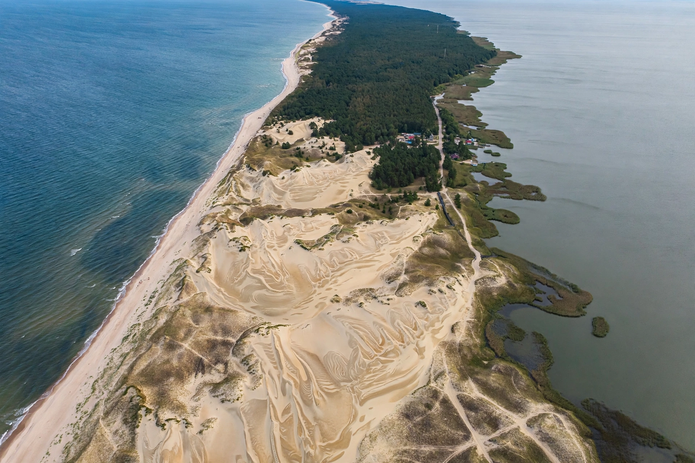

| Curonian Lagoon | |
|---|---|
| Location | Lithuania and Kaliningrad Oblast, Russia |
| Area | 1,619 km² |
| Average depth | 3.8 m |
| Inflow | Neman (Nemunas) River delta |

The Curonian Lagoon (Lithuanian: Kuršių marios) is a brackish lagoon separated from the Baltic Sea by the Curonian Spit, shared between Lithuania and Russia's Kaliningrad Oblast. It is the largest lagoon in Europe.
Covering about 1,619 km² with an average depth of only 3.8 m, the lagoon receives some 96% of its inflow from the Nemunas River, whose delta is a protected wetland rich in birdlife. It connects to the Baltic at the Klaipėda Strait at its northern end.
The lagoon freezes in winter and supports traditional fisheries for pike-perch, bream and smelt, alongside reed beds, sailing and tourism on the spit, a UNESCO World Heritage landscape.
Neris · Curonian Spit